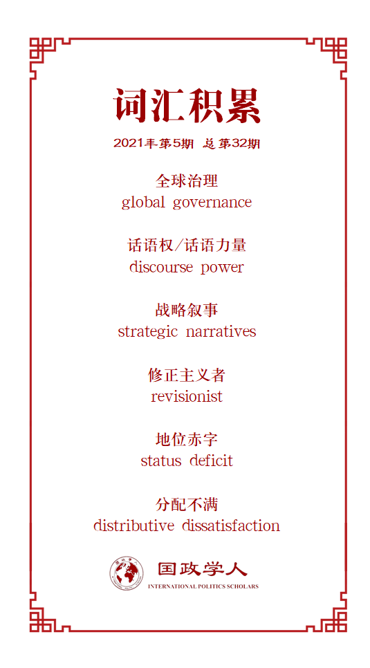

收录于合集

作品简介
【作者】 Yi Edward Yang，美国詹姆斯麦迪逊大学政治学教授，主要关注中国政治、外交政策制定、政治哲学和国际政治经济学。
【编译】 朱忻博，国政学人编译员，爱丁堡大学国际关系硕士
【校对】 唐一鸣 缪高意
【审核】 徐一君
【排版】 秦子宁
【美编 】游钜家
【来源】 Yang, Yi Edward. (2021). China’s Strategic Narratives in Global Governance Reform. The Journal of Contemporary China , 30(128), 299-313.
【归档】 《国际关系前沿》2021年第5期，总第32期。
期刊简介
《当代中国》（Journal of Contemporary China）是关于当代中国问题研究、涵盖多学科的同行评议学术刊物，由劳特利奇（Routledge）出版社每年出版发行五期，内容包括但不限于中国政治、法律、经济、文化与外交政策研究。刊物现任主编为赵穗生（Suisheng Zhao, 美国丹佛大学约瑟夫·科贝尔国际关系学院教授）。刊物影响因子为2.345（2019-2020年）。
新时代中国
对全球治理改革的战略叙事
China’s Strategic Narratives in Global Governance Reform
Yi Edward Yang
内容提要
中国长期以来一直寻求塑造关于中国的全球叙事。当前的中国政府不仅持续这一努力，还增加了一个全新方针：即寻求运用话语权，尤其是通过阐述和推广战略叙事的方式来重塑国际体系本身。借助社会身份认同理论（Social Identity Theory, SIT）和战略叙事框架（strategic narratives framework），本文表明在不同的全球治理领域中，中国采用多层面的叙事战略来重新定义现有规范或创建新的规范。本文提出了一个理论框架用于解释这种战略，并用该框架说明中国在国际体系层面和三个全球治理领域（气候变化、人权和互联网治理）的战略叙事。
文章导读
01
引言
在2018年欧美受到反全球化民粹主义冲击以及美国从全球领导地位回撤的背景下，中国希望在领导全球治理体系改革中发挥积极的作用。本文探讨了中国通过加强其话语力量（话语权）以实现重塑现有国际治理体系这一目标的努力。北京现在不再只是寻求塑造世界如何看待中国，而是寻求使用话语力量，尤其是通过创造、传播和推广战略叙事，来塑造国际体系本身。
文章探讨了以下两个问题：
（1）为什么中国强调话语力量是实现其全球治理改革雄心的方式？
（2）中国政府怎样进行战略叙事来领导全球治理改革？
借助社会身份认同理论（Social Identity Theory）和战略叙事框架（strategic narratives framework），本文认为在不同的全球治理领域，渴望获得大国地位的中国正采用多层面的叙事战略来影响现有规范或创建新的规范。本文提出了一个理论框架用于解释这种战略，并通过其阐明中国在国际体系层面和三个全球治理领域（气候变化、人权和互联网治理）的战略叙事。
02
寻求大国地位和话语权
自1949年新中国成立以来，历届中国政府都在努力恢复中国曾在世界舞台上拥有的大国地位。 大国地位可以（给国家）带来威望、尊重和实际的国家利益。大国能够参与并因此有机会为地区和国际制度制定规则/规范。 中国对大国地位的追求进一步被历史叙事所强化，因为中国在从鸦片战争爆发到1949年新中国成立的“百年屈辱”中不公地失去了其（大国）地位。对中国人来说，恢复中国作为全球领导大国的合法地位才是公平合理的。
主流国际关系理论对于中国崛起的影响存在争论。 现实主义学派 普遍预测随着中国实力的增长，其会更果断地追求自身利益，并且随之而来的“修正主义”倾向会扰乱国际秩序。 自由主义理论 则认为现有的开放和相互依赖的国际秩序会使中国等崛起国相信现状符合自身利益，并成为现有国际秩序规则、规范和制度的捍卫者，而非挑战者。抛开学术争论，近年美国媒体和政界纷纷将中国定性为现有国际秩序的挑战者。
但国际关系理论将中国的发展轨迹过分简单化为（仅）受体系层面变量驱动。媒体和政界对中国“修正主义”的描述也不是基于严格和系统的实证评估。作者认为，一种更有用的方法是 分析中国对大国地位的渴望与现有国际秩序满足其目标的程度之间的关系 。中国现今外交政策虽然更雄心勃勃，但并不是要决心完全推翻现有国际秩序。中国正在经历类似于Steven Ward所描述的 “分配不满” 阶段，其不满意现有的地位和特权，寻求改革和重塑（但不是推翻）现有的国际秩序。中国的不满是多方面的：首先，北京觉得自己在全球事务中的角色存在“地位赤字”，中国需要在全球治理规则/规范制定中起到与其实力相称的领导地位；第二，在北京看来，自由国际秩序体现了西方的价值观和意识形态，这不再令人满意或是可接受的；第三，中国认为现有的秩序需要进行改革，因为它无法适应近来的全球变化（如日益增长的多极化趋势和技术进步）或包括中国在内的发展中国家的利益诉求。
话语权与全球治理领导
更大的话语权可以通过以下方式帮助北京实现其外交政策目标。首先，国际关系建构主义学者主张，国家身份认同和国际秩序是由话语建构的。因此，中国要想成功地过渡到新的身份认同，例如全球治理改革的领导者，就必须通过有效和令人信服的叙事来解释并将其合理化。其次，在全球治理领域有强大话语权的国家在议程和规则制定方面都具有优势，这两者对领导全球治理改革至关重要。第三，现有的国际秩序主要是基于西方的自由主义价值观，通过拥有更强大的话语权，北京能够以更符合中国的观点重塑其他国家对这些价值观的定义、解释和执行。第四，北京敏锐地意识到强有力的话语可以为一个国家在国际事务中创造有利或不利的条件。作为“中国威胁论”等西方反华叙事的对象，中国的声誉和形象遭到了破坏，其作为合作伙伴和大国的吸引力也被削弱了。因此中国决心主动向世界讲述自己的故事。
03
战略叙事、社会认同理论
与中国战略
中国对在全球治理中获得更大的话语权的渴望强调了战略叙事的重要性。战略叙事有三个层次：国际/体系叙事描述世界是怎样构建的，谁是玩家，以及它怎么运作，例如冷战、反恐战争、自由国际秩序等叙事；身份认同叙事描述一个政治行为体（如一个民族国家），它有什么价值观，它应该在世界中扮演什么角色，什么样的利益值得追求，以及它的目标，例如中国崛起是对世界的威胁或机遇这一叙事；问题叙事关注为什么一个政策是需要的并（通常是）可取的，以及怎样成功地实施它，例如中国“一带一路”倡议能够提供连通性和公共产品的理由（这一叙事）。本文指出，要使叙事具有战略性，它需要由政治行为体特意地构建以达成政治目的——通常包括选择性地解释过去、现在和未来，旨在通过说服来实现政治目标。
社会认同理论和中国战略叙事
中国目前并没有试图推翻现有的国际秩序。相反，北京打算改革它，以更好地适应自己的价值观和利益。本研究将中国与现有秩序的互动分为两个层次。 第一个是体系层面——反映现有秩序权力结构的基本规范和制度，以及其主要参与者和它们的主要利益。第二个是各种各样的全球治理问题层面（如气候变化、国际贸易等）。
借鉴社会身份认同理论，本文认为中国正在采用多管齐下的叙事战略。社会身份认同理论认为当一个群体对自己的身份不满意或感到自己受到威胁时，它可能会追求以下几种身份管理策略之一： 社会流动、社会竞争或社会创造。 在国际关系领域， 社会流动战略要求一个国家效仿较高地位国家的价值观和规范，以加入精英俱乐部。 如果当前的精英俱乐部是可渗透的，但国家发现某些俱乐部规范没有吸引力时，它可能会采用社会创造战略，努力保留并资本化自己独特的特点。当国家认为国际地位等级制度不可渗透、不稳定或不合法时，就会采用社会竞争战略，在它认为可行的领域推翻领导集团。
社会身份认同理论在国关的应用对于阐明中国怎样使用战略叙事来实现其全球治理目标方面尤其有效。在国际体系层面，自由国际秩序总体上保持稳定和合法，当前的精英成员（美国领导的自由民主国家）欢迎中国在遵守现有规则并作为负责任的利益攸关者的前提下加入。但北京对当前秩序存在重大不满，中国在国际体系层面的战略叙事最好被描述为社会创造战略叙事，因为其选择性接受现有的规则和规范，并渴望在当前秩序下的某些（符合自身利益的）领域起领导作用。在问题领域层面，中国的战略叙事更加复杂，涉及到社会身份认同理论的所有三种策略。下一章将会通过四个案例研究详细阐述。
04
中国全球治理战略叙事的实例
中国国际体系层面战略叙事：“人类命运共同体”
在体系层面，北京将其作为全球领导者崛起和改变国际秩序的长期愿景用“人类命运共同体”的战略叙事加以概述。据官方说法， “命运共同体”描述了一种体现公平和平等原则的新型国际关系 。依据定义， 这是一个所有国家共同塑造世界未来、制定国际规则、管理国际事务并共享发展成果的共同体。 在这一新模式下，北京提供了“中国智慧”作为人类正在面临的问题的独特解决方案。
本文指出，“命运共同体”符合战略叙事的标准：中国是它的中心行为体，它有完整的规划，并由中国这个政治行为体说服其他国家支持其对世界秩序的看法。通过强调新模式在公平和平等方面与现有秩序之间的差异，中国显然想要将自己打造为一个主要吸引发展中国家的领导者。这是一种在不取代当前国际秩序情况下，在较小领域获得成功的尝试。因此，这是社会创造战略的例子。
中国全球治理问题层面战略叙事：气候变化
中国早期的战略叙事将自身描述为一个由发达国家主导的不公平气候制度的受害者，而气候问题最初是由这些发达国家造成的。2015年巴黎气候大会后，新的战略叙事被提出，国际气候制度被归到中国国际体系层面叙事——“人类未来命运共同体”的维度。依据其逻辑， 所有国家无论大小贫富，都应该承担共同但有区别的责任，实现国际气候治理的共赢。 总之，对这一新战略叙事的推广促进并合理化了中国从环境帝国主义受害者向气候变化机制的利益攸关者的身份转变。这是社会流动战略的例子，其使中国能够成为全球气候治理俱乐部的参与者、贡献者乃至潜在的领导者。尤其是（特朗普时期）美国从环境领域撤出后，中国抓住了这个权力真空的机会，宣称其在气候治理领域的领导地位。
中国全球治理问题层面战略叙事：人权
现有的全球人权制度由根植于西方自由民主传统的规则和规范所主导。西方认为这套全球治理规范和标准适用于所有国家，但中国政治认为集体优先于个人。因此，北京采取的一些为追求集体目标而有所忽视个体权利的行为，常常被西方认为违反了国际人权标准，而受到国际指责。北京意识到，如果没有话语权，中国只能在西方建立的人权框架下对话。 因此， 为了改变这种尴尬和被动的局面，中国决心要推进战略叙事建设以突出中国和西方在人权概念化和实践上的差异。
在此问题上，北京正在使用社会创造战略叙事：其正努力将国际规范从一个基于自由民主价值观的普世和不可剥夺的人权标准转向一个给民族国家权力来平衡个人权利和国家目标的替代标准。在叙事中，中国指出人权受文化影响。西方优先考虑个人权利，而中国和许多亚洲国家则综合考虑个人和集体权利，优先关注个人对家庭和社会的责任。北京目前已成功为联合国人权原则建立更多的机动空间，创造性战略叙事工作相当有效。
中国全球治理问题层面战略叙事：互联网治理
互联网治理仍是一个新兴的、存在争议的全球治理问题领域，国际社会对于网络空间并没有一套共同的规范和标准。中国因此有机会采取社会竞争性叙事战略，主动领导制定与自身价值观和优先利益相联系的网络治理规范。中国的互联网主权叙事与美国等西方国家形成鲜明对比。美国2011年开始积极推动一个自由主义式的“自由和开放”的网络治理方式。而中国则正在推行自己的网络治理规范——互联网主权方式，即承认一个民族国家拥有限制和控制其境内网络活动的权威。北京正从两方面积极推动中国式互联网主权规范：与欢迎中国在互联网领域领导的国家进行双边合作，并在国际机构内部进行多边行动。中国的目标是推动其互联网治理主张成为国际共识。
05
结论
本文研究了中国如何通过加强话语力量来实现其领导全球治理改革的目标。文中的创新型理论框架综合了 社会身份认同理论和战略叙事框架 ，使我们能够超脱出主流国际关系理论，剖析中国对当前国际秩序的看法和战略意图，以及它想要在其中扮演的角色。分析表明，中国实现其目标的战略复杂且存在细微差异，会在不同的问题领域根据现有的规范和中国自身利益发生变化。因此社会身份认同理论和战略叙事的结合会是学者分析中国外交政策和广泛意义上崛起国行为有用的补充分析方法。作者最后指出本文只是初步研究，这种方法还可以在理论和方法上加以扩展。
译者评述
本文超脱于现实主义、自由主义等主流国际关系理论之外，采用了一种新型的理论框架来分析中国的外交政策。作者借鉴了后实证主义国际关系理论的要素，对身份认同（identity）、叙事（narrative）和话语（discourse）加以着重分析，力图解释近年来中国关于推动全球治理改革的外交战略。主流的实证主义国际关系理论往往通过体系层面的变量去分析中国等崛起国的行为，作者认为这种分析框架是对实际情形的过分简化，导致了对中国是否对现有国际秩序持有修正主义态度的二元对立，而现实情况远比这复杂。
本文通过综合社会身份认同理论和战略叙事框架，指出随着国家实力的增长，崛起的中国的身份认同使其不再满足于现有国际秩序下的权力分配。因为该秩序是基于二战后的国际关系情况、主要由西方主导的，那时中国刚刚结束“百年屈辱”，并没有恢复其在历史中长期保有的世界领导地位（身份认同让中国人相信这才是中国在国际中的正常地位）。因此中国目前进入了一个“分配不满”阶段，希望在不推翻现有国际秩序的情况下对其进行适当改革，使其更加符合当今国际关系现状，更多体现中国在内的非西方国家的利益。而为了实现对国际秩序的改革，就需要在国际舞台上拥有更大话语权，运用话语力量使其他国家信服并认同中国的全球治理改革方案。作者通过对中国战略叙事的分析，指出其战略叙事是多层面的，对于不同问题采用了社会流动、社会创造、社会竞争等不同的叙事战略，并已取得了一定的积极效果。
崛起国的战略和政策制定往往是复杂的，会受多种因素影响。仅从单一角度考虑问题，确实比较简易明了，也容易实现逻辑自洽，但却相对地失去了其真实性。尤其是在发生大国权力转移的时期，守成国与崛起国的竞争日趋激烈，崛起国的任何行为都易被“修正主义”和挑战现有国际秩序的标签所概括，导致其真实意图遭到忽视。 因此，权力和国家利益等物质层面因素的分析固然重要，但身份认同和话语叙事等理念层面因素也应该受到关注 ，它们在一些问题上可以作为主流国际关系研究的有效补充，帮助我们理解和解释更真实的国际世界。 作者也提到他本文只是初步研究，其分析框架有待在日后的进一步研究中在理论和方法上加以扩展，但这种使用身份和话语分析崛起国行为的方法值得学界关注。
词汇整理

文章观点不代表本平台观点，本平台评译分享的文章均出于专业学习之用, 不以任何盈利为目的，内容主要呈现对原文的介绍，原文内容请通过各高校购买的数据库自行下载。
好好学习，天天“在看”
国政学人
支持学术公益与知识传播
微信扫一扫赞赏作者 __赞赏
已喜欢，对作者说句悄悄话
取消 __
发送给作者
发送
最多40字，当前共字
上一页 1/3 下一页
长按二维码向我转账
支持学术公益与知识传播
受苹果公司新规定影响，微信 iOS 版的赞赏功能被关闭，可通过二维码转账支持公众号。